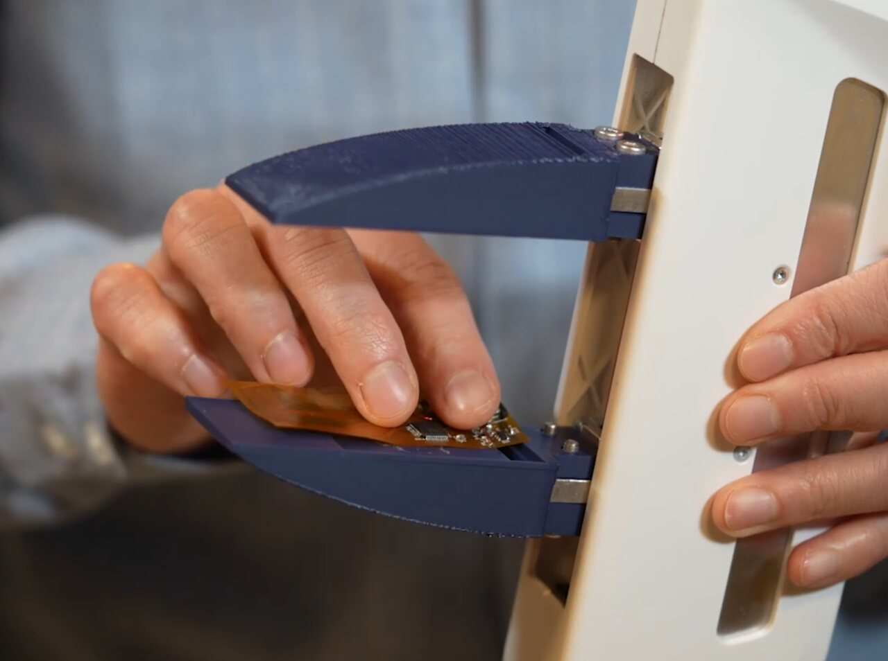
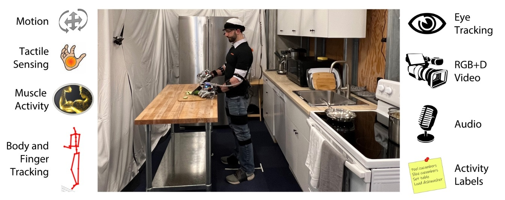
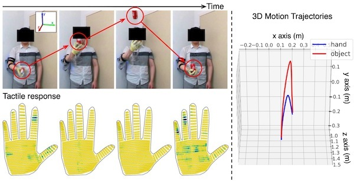
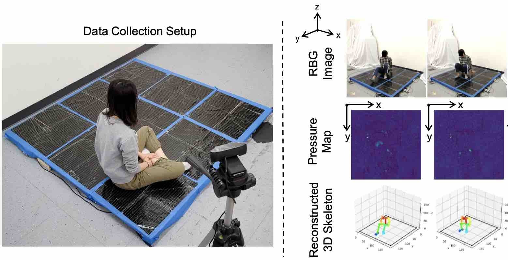

Nature 2019
The growing ecosystem of research building on FlexiTac, together with the prior works.
Maintained by FlexiTac Team
Have a relevant work? Open a PR or issue to add it.


Industrial-grade multimodal tactile sensors — 5× the resolution of a human fingertip, integrating pressure, vibration, and temperature.

Multimodal fingertip sensing (pressure, temperature, audio, accelerometer) fused with AI for real-time slip prevention and dexterous humanoid manipulation.





No works in this category yet.